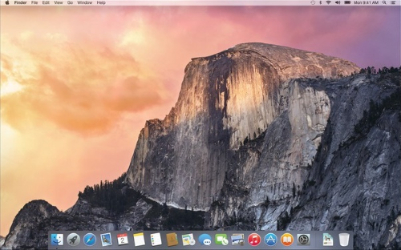
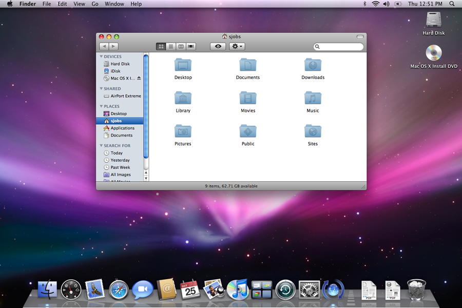
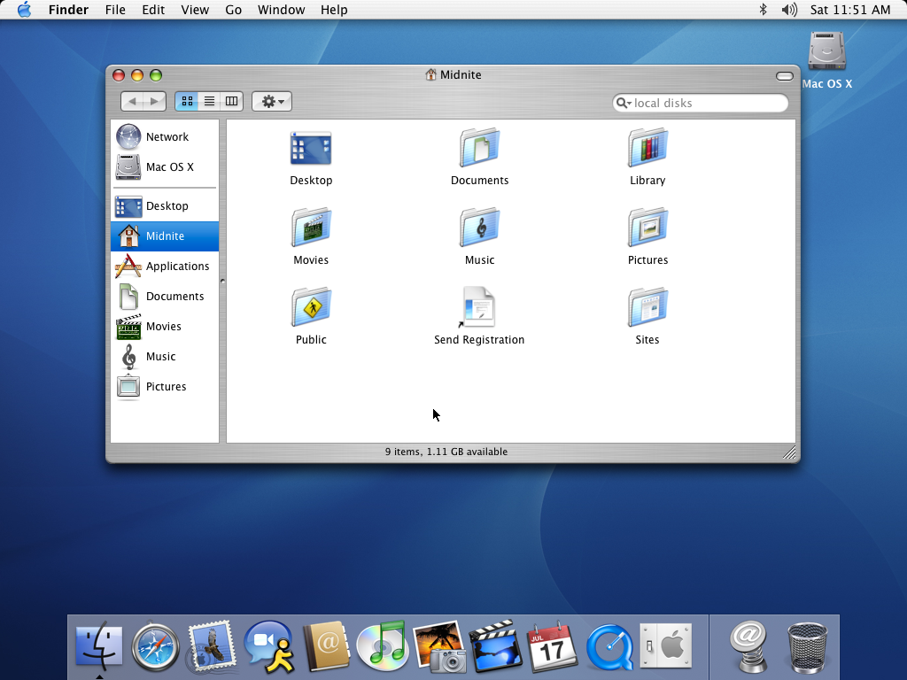

-

Yosemite
OS X Yosemite (version 10.10) est la onzième version majeure du système d'exploitation OS X, utilisé par les Macintosh d'Apple. OS X Yosemite a été annoncé officiellement le 2 juin 2014 lors du WWDC 2014. Son lancement est effectué le 16 octobre 2014, en téléchargement gratuit
Après l'abandon de noms de félins et l'utilisation de noms de lieux depuis OS X 10.9 avec le nom du spot de surf de Mavericks, 10.10 prend le nom du parc national de Yosemite.
Apple propose l'OS X Beta Program2 afin de profiter des nouvelles fonctionnalités d'OS X Yosemite prochainement. Apple délivrera la pré-version au premier million d'utilisateurs inscrit à ce programme. À ce jour, le programme a attiré beaucoup d'utilisateurs. Le programme OS X Beta a proposé six versions destinées aux personnes non-développeurs, qui ont décidé de joindre le programme. Ces versions sont appelées par leur terme anglophone, Public Beta. Elles sont proposées au téléchargement pour tout Mac pouvant utiliser OS X 10.9 à l'aide d'un code à utiliser sur le Mac App Store. Aujourd'hui, Apple propose au grand public de découvrir ses futures mises à jour en avant-première grâce au programme Apple Seed. Les participants au programme ont alors un accès aux dernières innovations logicielles d'Apple par un système de synchronisation via le Mac App Store.
Nouveautés majeures
- Nouvelle interface graphique ; elle reprend les codes d'iOS 7 et suit le même mouvement Flat Design.
- Centre de notifications enrichi : ajout des événements à venir et des rappels, introduction des widgets (météo, bourse, calculatrice…). Amélioration des performances (bêta 10.10.1).
- Nouvelle présentation de Spotlight. Il permet d'étendre la recherche aux applications et à Internet.
- Nouvelle version de Safari : barre d’outils simplifiée, barre de recherche enrichie, nouvelle présentation des onglets, performances améliorées (WebGL, HTML5).
- Mail : nouvel outil d’annotation des pièces jointes, limite de la taille des pièces jointes relevée à 5 Go grâce à une synchronisation avec iCloud, performances améliorées. Meilleure gestion des comptes (bêta 10.10.1).
- Handoff : poursuivre sous OS X une activité entamée sous iOS et vice versa.
- iCloud Drive : enregistrer n'importe quel type de fichier et le retrouver sur tous les appareils synchronisés avec iCloud.
- Mise en compatibilité d’AirDrop entre OS X et iOS.
- Instant Hotspot : se connecter à internet après l'appairage du Mac et de l'iPhone.
- Réception/envoi des SMS et des appels téléphoniques sur un Mac lié à un iPhone avec iOS 8.
- Mise à jour graphique majeure du Mac App Store en flat design (bêta 10.10.1).
- Amélioration des performances Wi-fi (bêta 10.10.1).
- Possibilité d'annoter une image insérée dans un courrier (avec du texte, une loupe...) avec l'extension Markup.
-

Leopard
Mac OS X 10.5, également appelé par son nom de code Leopard, est la sixième version du système d'exploitation Mac OS X d'Apple. Il a officiellement été lancé le vendredi 26 octobre 2007, à 18 heures.
Cette cinquième mise à jour majeure de Mac OS X est la première à être commercialisée en Universal binaries, pour être compatible tant avec les anciens Macintosh à processeur PowerPC (PPC G4, G5 à partir de 867 MHz) qu'avec les nouveaux à processeur Intel (CoreDuo, Core2Duo, Xeon), et requiert au minimum 512 Mo de RAM pour 9 Go d'espace disque.
Nouveautés majeures
Nouveau bureau, avec désormais :
- Un Dock en trois dimensions avec des effets de réflexion, qui peut contenir des piles de documents (les stacks en anglais)
- Les dossiers sont maintenant tout bleu et non plus semi-transparents.
- Une nouvelle barre de menu (semi-transparente, en fonction du fond d'écran) qui contient une zone de recherche dans le menu Aide, permettant de trouver rapidement une commande dans un menu, ou un article de support.
- L'interface des fenêtres a été harmonisée : il n'y a plus qu'un seul thème officiel (celui apparu avec la version 7 d'iTunes), la texture de métal brossé n'est donc plus utilisée.
- Enfin, l'interface est vectorielle
nouveau Finder, qui revêt la même barre latérale qu'iTunes, peut naviguer dans les dossiers grâce à Cover Flow (une fonctionnalité également reprise d'iTunes), et permet d'avoir un aperçu des fichiers par leur icône (pochette d'album pour les musiques, premiers mots pour un texte, première page pour un PDF, etc.)
QuickLook, une nouvelle fonctionnalité qui permet d'avoir un aperçu rapide d'un fichier sans avoir à ouvrir l'application qui y est associée. De nombreux types de fichiers sont supportés : images, musiques, fichiers textes, fichiers PDF, présentations, vidéos, documents Microsoft Office, etc.
Time Machine, un nouvel utilitaire qui sauvegarde automatiquement, de façon continue et transparente, tous les fichiers d'un utilisateur (sur un disque dur externe ou un serveur) et permet leur restauration à la carte, dans toute application compatible
Spaces, une nouvelle fonctionnalité qui apporte à Mac OS X le support des « bureaux multiples.
Spotlight, l'outil de recherche rapide, pourra désormais effectuer des recherches grâce à des opérateurs booléens, et ce sur tous les Macs du réseau local. Il sera également à même de rechercher le contenu du dictionnaire et d'effectuer des calculs sans avoir à ouvrir la Calculette.
Intégration de Core Animation, un nouveau système de développement d'animations, utilisable par les développeurs pour améliorer l'interactivité dans leurs applications, ou pour la création d'économiseurs d'écran, par exemple
Amélioration de « l'accès universel » du système aux personnes handicapées, avec notamment un nouveau synthétiseur vocal plus réaliste, la révision du système de navigation dans les différents éléments du système et le support du braille et du sous-titrage avancé dans QuickTime.
Système conçu entièrement en 64 bits, permettant une exécution native des applications de ce type, tout en restant compatible avec les applications 32 bits, et ce, sans émulation.
Amélioration des fonctions de contrôle parental (contrôle à distance, définition de plages horaires de « couvre-feu », logs complets, etc.) et icônes en 512×512 pixels.
Boutique en ligne -

Panther
Mac OS X 10.3, du nom de code Panther, est la quatrième mise à jour du système d'exploitation X du fabricant d'ordinateurs Apple disponible à partir du 24 octobre 2003. Mac OS X 10.3 requiert au minimum 256 Mo de RAM. La précédente est nommée Jaguar et la suivante Tiger.
Nouveautés
Panther a au moins 150 nouvelles fonctionnalités, incluant :
- Finder mis à jour.
- Interface en métal brossé.
- Un module de recherche sur le modèle de celui d'iTunes.
- Une barre latérale à la iTunes.
- Un basculement rapide entre utilisateurs sur le logo d'un cube animé (à condition d'avoir Quartz Extreme).
- Exposé, un programme pour aider l'utilisateur à gérer les fenêtres, en particulier lorsqu'il y en a beaucoup.
- Support intégré du Fax.
- Support intégré de X11.
- Support intégré dans TextEdit des documents Microsoft Word (*.doc).
- Amélioration de la sécurité pour l'interopérationalité avec Microsoft Windows.
- Sécurité
- FileVault : chiffrement et déchiffrement du dossier de l'utilisateur en temps réel, effacement sécurisé
- Xcode outils de développement qui accélère la compilation avec GCC 3.3.
- iChat AV logiciel de visioconférence.
- PDF accélération de la présentation.
- étiquettes colorées pour identifier les fichiers
- Pixlet haute définition video codec
{kind=link}
{kind=link}
{kind=link}